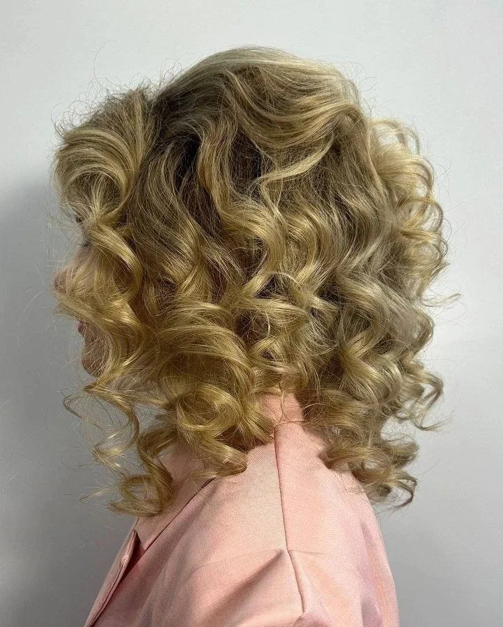

Стрижки
- Женская стрижкаот 700 ₽
- Мужская стрижкаот 500 ₽
- Детская стрижка[цена]
Женские, мужские и детские стрижки, уход и восстановление, окрашивание и наращивание на Театральном переулке, 4. Можно прийти в мастерскую или позвать мастера домой.

Цены
Всё, что делают в мастерской. Точную цену ухода и окрашивания мастер скажет, когда посмотрит волосы.
Стрижки
Уход, цвет, длина
Цены стрижек и список услуг из карточки мастерской в 2ГИС. Остальные цены, имена мастеров и фото работ [впишем ваши].
Что нужно волосам
Сайт подскажет процедуру из услуг мастерской. Окончательно мастер решит, когда посмотрит волосы.
Подстричь ребёнка дома, пожилых родителей или всю семью за один раз. Выберите «Выезд на дом» в записи или напишите в WhatsApp. Стоимость выезда [уточним].
Запись
Выберите услугу, где удобно, день и время, оставьте имя и телефон. Мастерская работает каждый день с 9:00 до 20:00.
Так заявка придёт вам
Новая запись: Ольга, женская стрижка, выезд на дом, суббота 11:00. Телефон клиентки и кнопка, чтобы сразу ответить в WhatsApp.
Здесь пример. На готовом сайте придёт настоящая заявка.
Занятость в календаре придумана для примера.
День
Время
Откроется бот студии: нажмите «Старт», и накануне придёт напоминание. Мастерская увидит ваш ник и сможет написать в Telegram. Здесь это демонстрация.
Напоминания включены. Накануне визита придёт сообщение в Telegram.
Как найти
Биробиджан, Театральный переулок, 4
Обучение
В мастерской проходит обучение мастеров. Программу, длительность и стоимость [впишем с ваших слов].
Узнать про обучениеВопросы
Женская стрижка от 700 ₽, мужская от 500 ₽. Детская стрижка, уход, окрашивание и наращивание зависят от длины и густоты волос, мастер назовёт цену после консультации.
Да, мастерская делает выезд на дом. Это удобно, если нужно подстричь ребёнка, пожилого родственника или всю семью сразу. Напишите в WhatsApp, где вы и что нужно.
Кератин разглаживает и убирает пушистость. Холодное восстановление питает сухие и тусклые волосы без нагрева. Реконструкция нужна волосам, которые ослабли после осветления. Отметьте в блоке «Что нужно волосам», что беспокоит, и сайт подскажет.
Каждый день с 9:00 до 20:00. Записаться можно на сайте или в WhatsApp.
Наличными или переводом с карты.
Биробиджан, Театральный переулок, 4, 1 этаж.